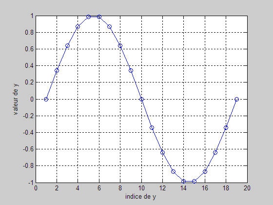
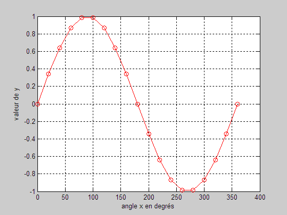
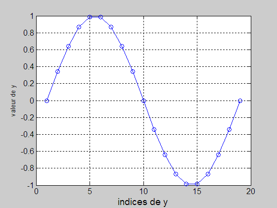
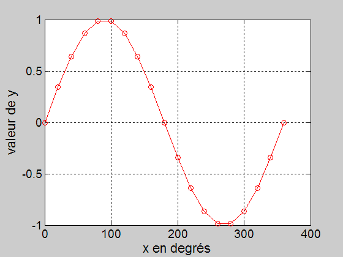

La fonction plot
clear; clc; close all; for i = 1:19 x(i)= (i-1)*20; y(i)= sind(x(i)); end figure(1); % Affiche fig. 1 plot(y,'o-b'); grid on; % grillage sur la fig. ylabel('valeur de y') % en ordonnée xlabel('indice de y') % en abscisse figure(2); plot(x,y,'o-r'); grid on; ylabel('valeur de y') % en ordonnée xlabel('angle x en degrés') % en abscisse


On peut grossir les caractères (information non matière à examen)
figure(1); set(gca,'FontSize',12); xlabel('indices de y','FontSize',14)

figure(2); set(gca,'FontSize',14); xlabel('x en degrés','FontSize',16); ylabel('valeur de y','FontSize',16);
